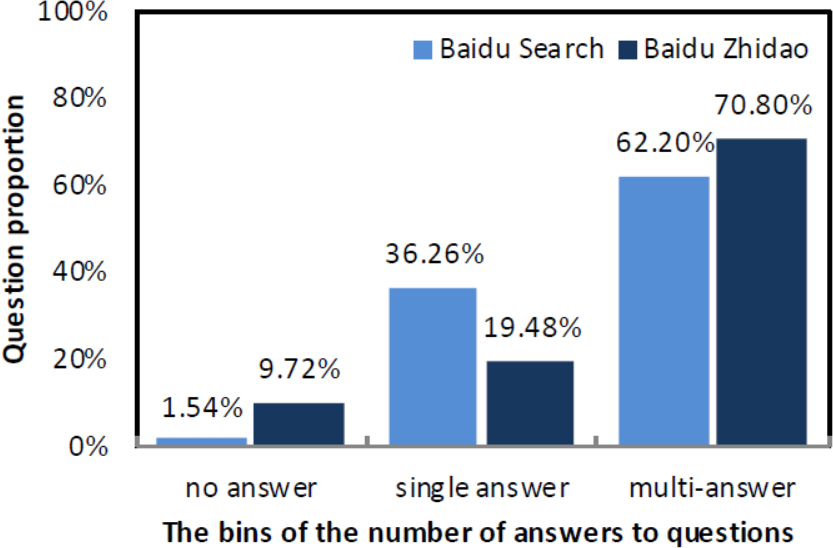

DuReader
DuReader: a Chinese Machine Reading Comprehension Dataset from Real-world Applications
Paper: https://arxiv.org/abs/1711.05073
Page: http://ai.baidu.com/broad/subordinate?dataset=dureader
Code: https://github.com/baidu/DuReader/
DuReader，一个新的大型开放中文机器阅读理解数据集。
DuReader 与以前的 MRC 数据集相比有三个优势：
数据来源：问题和文档均基于百度搜索和百度知道; 答案是手动生成的。
问题类型：它为更多的问题类型提供了丰富的注释，特别是是非类和观点类问题。
规模：包含 200K 个问题，420K 个答案和 1M 个文档; 是目前最大的中文 MRC 数据集。
This paper introduces DuReader, a new large-scale, open-domain Chinese machine reading comprehension (MRC) dataset, designed to address real-world MRC.
DuReader has three advantages over previous MRC datasets:
data sources: questions and documents are based on Baidu Search and Baidu Zhidao; answers are manually generated.
question types: it provides rich annotations for more question types, especially yes-no and opinion questions, that leaves more opportunity for the research community.
scale: it contains 200K questions, 420K answers and 1M documents; it is the largest Chinese MRC dataset so far.
中文
简介
| Dataset | Lang | #Que. | #Docs | Source of Que. | Source of Docs | Answer Type |
|---|---|---|---|---|---|---|
| CNN/DM | EN | 1.4M | 300K | Synthetic cloze | News | Fill in entity |
| HLF-RC | ZH | 100K | 28K | Synthetic cloze | Fairy/News | Fill in word |
| CBT | EN | 688K | 108 | Synthetic cloze | Children’s books | Multi. choices |
| RACE | EN | 870K | 50K | English exam | English exam | Multi. choices |
| MCTest | EN | 2K | 500 | Crowd-sourced | Fictional stories | Multi. choices |
| NewsQA | EN | 100K | 10K | Crowd-sourced | CNN | Span of words |
| SQuAD | EN | 100K | 536 | Crowd-sourced | Wiki. | Span of words |
| SearchQA | EN | 140K | 6.9M | QA site | Web doc. | Span of words |
| TrivaQA | EN | 40K | 660K | Trivia websites | Wiki./Web doc. | Span/substring of words |
| NarrativeQA | EN | 46K | 1.5K | Crowd-sourced | Book&movie | Manual summary |
| MS-MARCO | EN | 100K | 200K | User logs | Web doc. | Manual summary |
| DuReader | ZH | 200k | 1M | User logs | Web doc./CQA | Manual summary |
表 1: 机器阅读理解数据集对比
初步研究
| Examples | Fact | Opinion |
|---|---|---|
| Entity | iphone哪天发布 | 2017最好看的十部电影 |
| - | On which day will iphone be released | Top 10 movies of 2017 |
| Description | 消防车为什么是红的 | 丰田卡罗拉怎么样 |
| - | Why are firetrucks red | How is Toyota Carola |
| YesNo | 39.5度算高烧吗 | 学围棋能开发智力吗 |
| - | Is 39.5 degree a high fever | Does learning to play go improve intelligence |
表 2: 中文六类问题的例子
从初步研究到 DuReader
数据收集与标注
数据收集
DuReader 的样本可用四元组表示： \(\{q, t, D, A\}\)，其中 \(q\) 是问题，\(t\) 是问题类型，\(D\) 是相关文档集合，\(A\) 是由人类标注产生的答案集合。
问题类型标注
答案标注
众包
质量控制
训练集、开发集和测试集
| 数量 | 训练集 | 开发集 | 测试集 |
|---|---|---|---|
| 问题 | 181K | 10K | 10K |
| 文档 | 855K | 45K | 46K |
| 答案 | 376K | 20K | 21K |
DuReader 是（相对地）很有挑战
挑战：
答案数量

图 1. 答案数量分布
编辑距离
人类生成的答案和源文档之间的差异很大。
文档长度
问题平均 4.8 词，答案平均 69.6 词，文档平均 396 词。
实验
基线系统
从每个文件中选择一个最相关的段落
在选定的段落中应用最先进的 MRC 模型
段落选择
在训练阶段，我们从文档中选择与人类生成答案重叠最大的段落作为最相关段落。
在测试阶段，由于我们没有人类生成答案，我们选择与问题重叠最大的段落作为最相关段落。
答案选择
Match-LSTM
要在段落中找到答案，它会按顺序遍历段落，并动态地将注意力加权问题表示与段落的每个标记进行匹配。
最后，使用答案指针层来查找段落中的答案范围。
BiDAF
它使用上下文对问题的关注和问题对上下文的关注，以突出问题和上下文中的重要部分。
之后，使用注意流层来融合所有有用的信息，以获得每个位置的向量表示。
结果和分析
评价方法：BLEU-4, Rouge-L
| Systems | Baidu Search | - | Baidu Zhidao | - | All | - |
|---|---|---|---|---|---|---|
| - | BLEU-4% | Rouge-L% | BLEU-4% | Rouge-L% | BLEU-4% | Rouge-L% |
| Selected Paragraph | 15.8 | 22.6 | 16.5 | 38.3 | 16.4 | 30.2 |
| Match-LSTM | 23.1 | 31.2 | 42.5 | 48.0 | 31.9 | 39.2 |
| BiDAF | 23.1 | 31.1 | 42.2 | 47.5 | 31.8 | 39.0 |
| Human | 55.1 | 54.4 | 57.1 | 60.7 | 56.1 | 57.4 |
表 6：典型的 MRC 系统在 DuReader 上的效果
| Question type | Description | - | Entity | - | YesNo | - |
|---|---|---|---|---|---|---|
| - | BLEU-4% | Rouge-L% | BLEU-4% | Rouge-L% | BLEU-4% | Rouge-L% |
| Match-LSTM | 32.8 | 40.0 | 29.5 | 38.5 | 5.9 | 7.2 |
| BiDAF | 32.6 | 39.7 | 29.8 | 38.4 | 5.5 | 7.5 |
| Human | 58.1 | 58.0 | 44.6 | 52.0 | 56.2 | 57.4 |
表 8：不同问题类型的效果
Opinion-aware 验证
| Question type | Fact | - | Opinion | - |
|---|---|---|---|---|
| - | BLEU-4% | Rouge-L% | BLEU-4% | Rouge-L% |
| Opinion-unaware | 6.3 | 8.3 | 5.0 | 7.1 |
| Opinion-aware | 12.0 | 13.9 | 8.0 | 8.9 |
表 9：opinion-aware 模型在 YesNo 问题上的效果
讨论
结论
提出了 DuReader 数据集，提供了几个 baseline。
English
Introduction
| Dataset | Lang | #Que. | #Docs | Source of Que. | Source of Docs | Answer Type |
|---|---|---|---|---|---|---|
| CNN/DM | EN | 1.4M | 300K | Synthetic cloze | News | Fill in entity |
| HLF-RC | ZH | 100K | 28K | Synthetic cloze | Fairy/News | Fill in word |
| CBT | EN | 688K | 108 | Synthetic cloze | Children’s books | Multi. choices |
| RACE | EN | 870K | 50K | English exam | English exam | Multi. choices |
| MCTest | EN | 2K | 500 | Crowd-sourced | Fictional stories | Multi. choices |
| NewsQA | EN | 100K | 10K | Crowd-sourced | CNN | Span of words |
| SQuAD | EN | 100K | 536 | Crowd-sourced | Wiki. | Span of words |
| SearchQA | EN | 140K | 6.9M | QA site | Web doc. | Span of words |
| TrivaQA | EN | 40K | 660K | Trivia websites | Wiki./Web doc. | Span/substring of words |
| NarrativeQA | EN | 46K | 1.5K | Crowd-sourced | Book&movie | Manual summary |
| MS-MARCO | EN | 100K | 200K | User logs | Web doc. | Manual summary |
| DuReader | ZH | 200k | 1M | User logs | Web doc./CQA | Manual summary |
Table 1: DuReader has three advantages over previous MRC datasets: (1) data sources: questions and documents are based on Baidu Search & Baidu Zhidao; answers are manually generated, (2) question types, and (3) scale: 200k questions, 420k answers and 1M documents (largest Chinese MRC dataset so far). The next three tables address advantage (2).
Pilot Study
| Examples | Fact | Opinion |
|---|---|---|
| Entity | iphone哪天发布 | 2017最好看的十部电影 |
| - | On which day will iphone be released | Top 10 movies of 2017 |
| Description | 消防车为什么是红的 | 丰田卡罗拉怎么样 |
| - | Why are firetrucks red | How is Toyota Carola |
| YesNo | 39.5度算高烧吗 | 学围棋能开发智力吗 |
| - | Is 39.5 degree a high fever | Does learning to play go improve intelligence |
Table 2: Examples of the six types of questions in Chinese (with glosses in English). Previous datasets have focused on fact-entity and fact-description, though all six types are common in search logs.
Scaling up from the Pilot to DuReader
Data Collection and Annotation
Data Collection
The DuReader is a sequence of 4-tuples: \(\{q, t, D, A\}\), where \(q\) is a question, \(t\) is a question type, \(D\) is a set of relevant documents, and \(A\) is an answer set produced by human annotators.
Question Type Annotation
Answer Annotation
Crowd-sourcing
Quality Control
Training, Development and Test Sets
| number | training | development | test |
|---|---|---|---|
| questions | 181K | 10K | 10K |
| documents | 855K | 45K | 46K |
| answers | 376K | 20K | 21K |
The training, development and test sets consist of 181K, 10K and 10K questions, 855K, 45K and 46K documents, 376K, 20K and 21K answers, respectively.
DuReader is (Relatively) Challenging
challenges:
The number of answers.
Figure 1: A few questions have one (and only one) answer, especially for Zhidao.
The edit distance.
the difference between the human generated answers and the source documents is large.
The document length.
In DuReader, questions tend to be short (4.8 words on average) compared to answers (69.6 words), and answers tend to be short compared to documents (396 words on average).
Experiments
Baseline Systems
our designed systems have two steps:
select one most related paragraph from each document
apply the state-of-the-art MRC models on the selected paragraphs
Paragraph Selection
In training stage, we select one paragraph from a document as the most relevant one, if the paragraph has the largest overlap with human generated answer.
In testing stage, since we have no human generated answer, we select the most relevant paragraph that has the largest overlap with the corresponding question.
Answer Span Selection
Match-LSTM
To find an answer in a paragraph, it goes through the paragraph sequentially and dynamically aggregates the matching of an attention-weighted question representation to each token of the paragraph.
Finally, an answer pointer layer is used to find an answer span in the paragraph.
BiDAF
It uses both context-to-question attention and question-to-context attention in order to highlight the important parts in both question and context.
After that, the so-called attention flow layer is used to fuse all useful information in order to get a vector representation for each position.
Results and Analysis
We evaluate the reading comprehension task via character-level BLEU-4 and Rouge-L.
| Systems | Baidu Search | - | Baidu Zhidao | - | All | - |
|---|---|---|---|---|---|---|
| - | BLEU-4% | Rouge-L% | BLEU-4% | Rouge-L% | BLEU-4% | Rouge-L% |
| Selected Paragraph | 15.8 | 22.6 | 16.5 | 38.3 | 16.4 | 30.2 |
| Match-LSTM | 23.1 | 31.2 | 42.5 | 48.0 | 31.9 | 39.2 |
| BiDAF | 23.1 | 31.1 | 42.2 | 47.5 | 31.8 | 39.0 |
| Human | 55.1 | 54.4 | 57.1 | 60.7 | 56.1 | 57.4 |
Table 6: Performance of typical MRC systems on the DuReader.
| Question type | Description | - | Entity | - | YesNo | - |
|---|---|---|---|---|---|---|
| - | BLEU-4% | Rouge-L% | BLEU-4% | Rouge-L% | BLEU-4% | Rouge-L% |
| Match-LSTM | 32.8 | 40.0 | 29.5 | 38.5 | 5.9 | 7.2 |
| BiDAF | 32.6 | 39.7 | 29.8 | 38.4 | 5.5 | 7.5 |
| Human | 58.1 | 58.0 | 44.6 | 52.0 | 56.2 | 57.4 |
Table 8: Performance on various question types.
Opinion-aware Evaluation
| Question type | Fact | - | Opinion | - |
|---|---|---|---|---|
| - | BLEU-4% | Rouge-L% | BLEU-4% | Rouge-L% |
| Opinion-unaware | 6.3 | 8.3 | 5.0 | 7.1 |
| Opinion-aware | 12.0 | 13.9 | 8.0 | 8.9 |
Table 9: Performance of opinion-aware model on YesNo questions.
Discussion
Conclusion
This paper announced the release of DuReader, a new dataset for researchers interested in machine reading comprehension (MRC).